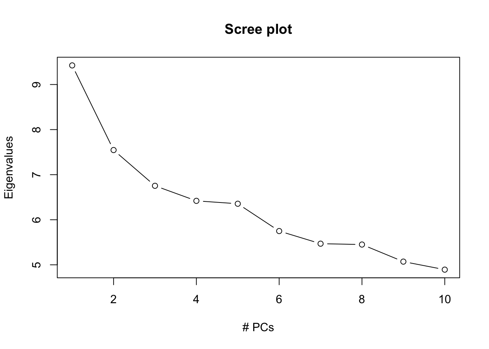

Chapter 5 Population Stratification Correction Using EIGENSTRAT
The EIGENSTRAT method uses principal component analysis to explicitly model ancestry differences between cases and controls along continuous axes of variation; the resulting correction is specific to a candidate marker’s variation in frequency across ancestral populations, minimizing spurious associations while maximizing power to detect true associations. The EIGENSTRAT package has a built-in plotting script and supports multiple file formats and quantitative phenotypes. The package is based on the method described in Price et al. 2006.
See https://github.com/DReichLab/EIG.
5.1 EIGENSTRAT input files
EIGENSTRAT accepts multiple types of files as input, including “ANCESTRYMAP” files, “EIGENSTRAT” files, “PED” files, “PACKEDPED” files and “PACKEDANCESTRYMAP” files. Detailed introduction of these different file formats can be found in their README file. We will use PED file format in this example.
We will prepare three files– “genotype.ped”, “genotype.pedsnp” and “genotype.pedind”.
- The PED files format is described above. We will use genotype file: genotype.ped (saved in ./PC` folder and has size of 1.1G.)
- The indiv file(
./PC/genotype.pedind) contains the first 6 or 7 columns of the genotype file.The genotype file is 1 line per individual.
The first 6 or 7 columns of the genotype file are:- 1st column is family ID.
- 2nd column is sample ID.
- 3rd and 4th column are sample IDs of parents.
- 5th column is gender (male is 1, female is 2)
- 6th column is case/control status (1 is control, 2 is case) OR quantitative trait value OR population group label.
- 7th column (this column is optional) is always set to 1.
In the two genotype columns for each SNP, missing data is represented by 0.
- 1st column is family ID.
- The snp file(
./PC/genotype.pedsnp) contains 1 line per SNP. There are 6 columns (last 2 optional):- 1st column is chromosome. Use X for X chromosome.(Note: SNPs with illegal chromosome values, such as 0, will be removed)
- 2nd column is SNP name
- 3rd column is genetic position (in Morgans)
- 4th column is physical position (in bases)
- Optional 5th and 6th columns are reference and variant alleles.(For monomorphic SNPs, the variant allele can be encoded as X.)
The following command use the previous map file as genotype.pedsnp file (in Linux):
# bash codes- run in terminal
# Windows user need to run in Powershell App
cp ./Data/PC/genotype_1k.map ./Data/PC/genotype_1k.pedsnpThe following command prepare the genotype.pedind file. Because the original data doesn’t have case/control information, we will randomly assign them to case or control group to use as an example.
# R codes- run in R Console
set.seed(1)
group<-rep(1,344)
idx<-sample(344,170)
group[idx]<-2
write.table(group, "./Data/PC/group.txt", row.names=F, col.names=F, quote=F, sep=" ")
head(group)## [1] 2 1 1 1 1 1Then we select the first five columns from .ped file (in Linux), add the group file we just generated to get the genotype.pedind.
5.2 Run EIGENSTRAT Using Input Genotype Data
We call smartpca.perl in EIGENSTRAT on input genotype data. (All data and results in this section are saved in .PC folder.)
The options are:
-i example.ped : genotype file
-a example.pedsnp : snp file
-b example.pedind : indiv file
-k : (Default is 10) number of principal components to output
-o example.pca : output file of principal components
-p example.plot : prefix of output plot files of top 2 principal components. (labeling individuals according to labels in indiv file)
-e example.eval : output file of all eigenvalues
-l example.log : output logfile
The following code takes several minutes to run. It will generate a warning message that /usr/bin/gs: /apps/spack/bell/apps/libtiff/4.0.10-gcc-9.3.0-bjzustl/lib/libtiff.so.5: no version information available (required by /lib64/libgs.so.9). This is because the libtiff module called by this command is incompatible with the system gs command. You can safely ignore it.
# bash codes-can't run on either macOS or Windows
# this can only be run under Linux system or on computing server
./Tools/eigensoft-master/bin/smartpca.perl \
-i ./Data/PC/genotype_1k.ped -a ./Data/PC/genotype_1k.pedsnp -b ./Data/PC/genotype_1k.pedind \
-k 10 -o ./Data/PC/genotype_1k.pca -p ./Data/PC/genotype_1k.plot \
-e ./Data/PC/genotype_1k.eval -l ./Data/PC/genotype_1k.logThe main outputs are “genotype.pca”. A PCA plot is generated in “genotype.plot.ps”.
A scree plot displays the variance explained by each component. We look for the “elbow” of the plot, i.e., point where line bends. Could do formal test on derivative of scree line, but common sense approach often works fine.
We first extract eigenvalues from the PCA results file “genotype.pca” to save it in “pc_eig.txt”.
# bash codes- run in terminal
# Windows user need to run in Powershell App
awk 'NR >= 2 && NR <= 11 {print}' ./Data/PC/genotype_1k.pca > ./Data/PC/pc_eig.txt# R codes- run in R Console
# generate plot in R
pc_eig <- read.table("./Data/PC/pc_eig.txt",header=F) # read in eigenvalue
names(pc_eig) <- "eig"
# generate scree plot-- eigenvalue vs # of PC
plot(1:10, pc_eig$eig, type="b", xlab="# PCs", ylab="Eigenvalues",
main="Scree plot")
Usually, we use a cut-off of eigenvalue > 1. In this plot, this criteria results in an unreasonable high number of factors, because the eigenvalue for PC 10 is still > 1.
5.3 Test the Significance of Principle Components (PCs)
The following command creates a matrix from genotype.pca (in Linux)
# bash codes- run in terminal
# Windows user need to run in Powershell App
tail -n+12 ./Data/PC/genotype_1k.pca > ./Data/PC/pc.txtThe following commands employ linear regression to the test the significance of PCs. P values can be found in the last column of the table: Pr(>|t|).
- phenotype file: r_met.txt
# R codes- run in R Console
y=read.table("./Data/PC/r_met.txt") #read phenotype data
pc=read.table("./Data/PC/pc.txt") #read pc data
y=as.matrix(y) #create a matrix from phenotype data
pc=as.matrix(pc) #create a matrix from pc data
fit=lm(y~pc)
summary(fit)##
## Call:
## lm(formula = y ~ pc)
##
## Residuals:
## Min 1Q Median 3Q Max
## -2.93261 -0.56311 -0.00616 0.63983 2.73666
##
## Coefficients:
## Estimate Std. Error t value Pr(>|t|)
## (Intercept) 9.869e-06 5.404e-02 0.000 0.9999
## pcV1 3.034e-01 1.002e+00 0.303 0.7623
## pcV2 -8.976e-01 1.002e+00 -0.895 0.3712
## pcV3 -8.568e-02 1.002e+00 -0.085 0.9319
## pcV4 -7.145e-01 1.002e+00 -0.713 0.4765
## pcV5 -1.805e+00 1.002e+00 -1.801 0.0727 .
## pcV6 6.453e-01 1.002e+00 0.644 0.5202
## pcV7 -1.112e+00 1.002e+00 -1.109 0.2681
## pcV8 -4.998e-01 1.002e+00 -0.499 0.6184
## pcV9 5.221e-01 1.002e+00 0.521 0.6028
## pcV10 -8.423e-01 1.002e+00 -0.840 0.4013
## ---
## Signif. codes: 0 '***' 0.001 '**' 0.01 '*' 0.05 '.' 0.1 ' ' 1
##
## Residual standard error: 1.002 on 333 degrees of freedom
## Multiple R-squared: 0.02209, Adjusted R-squared: -0.007276
## F-statistic: 0.7522 on 10 and 333 DF, p-value: 0.6749